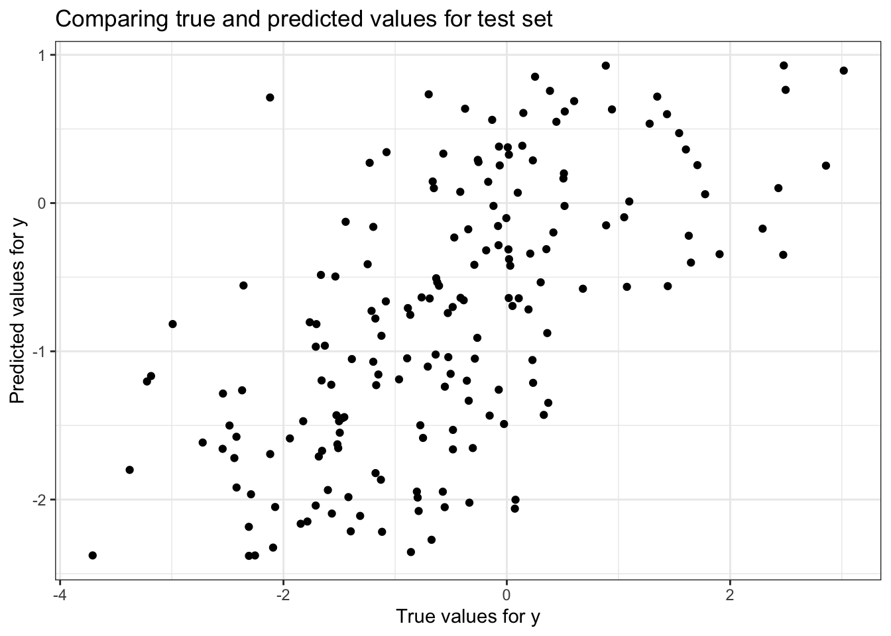
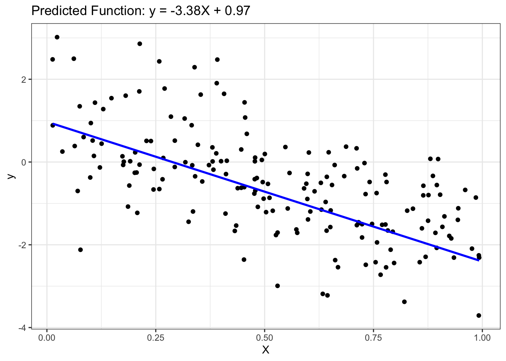
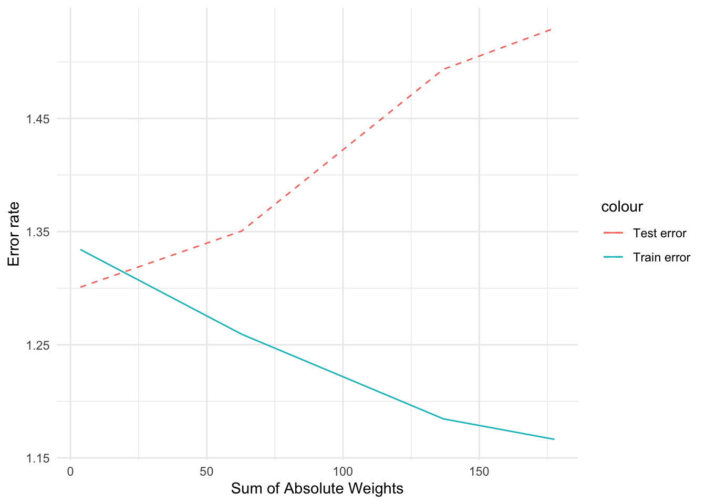

# Setting up a global themetheme_set(theme_bw() +theme(legend.position ="top"))
Synthetic Data Generation
# This block sets parameters for the analysis.seed <-1# Set the random seed for reproducibilitynumInstances <-200# Define the total number of instances in the dataset# Set seedset.seed(seed)# Generating dataX <-matrix(runif(numInstances), ncol=1)y_true <--3*X +1y <- y_true +matrix(rnorm(numInstances), ncol=1)
# Plotting the generated data to visualize the linear relationshipggplot() +geom_point(aes(x=X, y=y), color="black") +geom_line(aes(x=X, y=y_true), color="blue", linewidth=1) +ggtitle('True function: y = -3X + 1') +xlab('X') +ylab('y') # Create a scatter plot of the generated data
# Interpretation:# Points represent the generated data, and the blue line shows the true underlying linear relationship without the noise
Multiple Linear Regression
1) Split Input Data into Training and Test Sets
# This section splits the data into training and test setsnumTrain <-20# number of training instancesnumTest <- numInstances - numTrainset.seed(123) # For reproducibility
# Combine X and y into a tibble for easier data manipulationdata <-tibble(X = X, y = y)split_obj <-initial_split(data, prop = numTrain/numInstances)
# Split the dataset into training and testing setstrain_data <-training(split_obj)test_data <-testing(split_obj)# Extract training and testing data from the split object# Training setsX_train <- train_data$Xy_train <- train_data$y# Test setsX_test <- test_data$Xy_test <- test_data$y
2) Fit Regression Model to Training Set
# Setting up a linear regression model using the 'lm' enginelin_reg_spec <-linear_reg() |>set_engine("lm")# Fit the linear regression model to the training datalin_reg_fit <- lin_reg_spec |>fit(y ~ X, data = train_data)# Interpretation: # This step involves creating a linear regression model using the training data
3) Apply Model to the Test Set
# This block applies the model to the test datay_pred_test <-predict(lin_reg_fit, new_data = test_data) |>pull(.pred)# Interpretation: # Involves predicting the response variable for the test set using the fitted model
4) Evaluate Model Performance on Test Set
# This block evaluates the performance of the model on the test set# Create a scatter plot to compare true and predicted values of the response variable for the test setggplot() +geom_point(aes(x =as.vector(y_test), y = y_pred_test), color ='black') +ggtitle('Comparing true and predicted values for test set') +xlab('True values for y') +ylab('Predicted values for y')

# Interpretation: # This part assesses how well the model predicts the response variable on new data
# Organize test data and predictions for model evaluationeval_data <-tibble(truth =as.vector(y_test),estimate = y_pred_test)# Calculate and display the Root Mean Squared Error (RMSE) and R squared value of the modelrmse_value <-rmse(data = eval_data, truth = truth, estimate = estimate)r2_value <-rsq(eval_data, truth = truth, estimate = estimate)
# Output the RMSE and R-squared value to assess the model's goodness of fitcat("Root mean squared error =", sprintf("%.4f", rmse_value$.estimate), "\n")
# This block involves postprocessing steps after model evaluation# Extract and display the slope coefficient from the linear regression modelcoef_values <-coef(lin_reg_fit$fit) slope <- coef_values["X"]intercept <- coef_values["(Intercept)"]
# Output the intercept of the linear regression modelcat("Slope =", slope, "\n")
Slope = -3.376872
cat("Intercept =", intercept, "\n")
Intercept = 0.9723522
# Plot the test data and the predicted linear function, displaying the model's fitted lineggplot() +geom_point(aes(x =as.vector(X_test), y =as.vector(y_test)), color ='black') +geom_line(aes(x =as.vector(X_test), y = y_pred_test), color ='blue', linewidth =1) +ggtitle(sprintf('Predicted Function: y = %.2fX + %.2f', slope, intercept)) +xlab('X') +ylab('y')

# Interpretation: # Includes examining the model’s coefficients and other outputs to understand the model better
Effect of Correlated Attributes
Create correlated attributes
# Generate additional predictor variables (X2, X3, X4, X5) that are correlated with each otherset.seed(1)X2 <-0.5* X +rnorm(numInstances, mean=0, sd=0.04)X3 <-0.5* X2 +rnorm(numInstances, mean=0, sd=0.01)X4 <-0.5* X3 +rnorm(numInstances, mean=0, sd=0.01)X5 <-0.5* X4 +rnorm(numInstances, mean=0, sd=0.01)
# Create and display scatter plots to visualize correlations between each pair of generated variablesplot1 <-ggplot() +geom_point(aes(X, X2), color='black') +xlab('X') +ylab('X2') +ggtitle(sprintf("Correlation between X and X2 = %.4f", cor(X[-c((numInstances-numTest+1):numInstances)], X2[-c((numInstances-numTest+1):numInstances)])))plot2 <-ggplot() +geom_point(aes(X2, X3), color='black') +xlab('X2') +ylab('X3') +ggtitle(sprintf("Correlation between X2 and X3 = %.4f", cor(X2[-c((numInstances-numTest+1):numInstances)], X3[-c((numInstances-numTest+1):numInstances)])))plot3 <-ggplot() +geom_point(aes(X3, X4), color='black') +xlab('X3') +ylab('X4') +ggtitle(sprintf("Correlation between X3 and X4 = %.4f", cor(X3[-c((numInstances-numTest+1):numInstances)], X4[-c((numInstances-numTest+1):numInstances)])))plot4 <-ggplot() +geom_point(aes(X4, X5), color='black') +xlab('X4') +ylab('X5') +ggtitle(sprintf("Correlation between X4 and X5 = %.4f", cor(X4[-c((numInstances-numTest+1):numInstances)], X5[-c((numInstances-numTest+1):numInstances)])))# Combine plots grid.arrange(plot1, plot2, plot3, plot4, ncol=2)
# Split the dataset with correlated variables into training and test setstrain_indices <-1:(numInstances - numTest)test_indices <- (numInstances - numTest +1):numInstances# Create combined training and testing setsX_train2 <-cbind(X[train_indices], X2[train_indices])X_test2 <-cbind(X[test_indices], X2[test_indices])X_train3 <-cbind(X[train_indices], X2[train_indices], X3[train_indices])X_test3 <-cbind(X[test_indices], X2[test_indices], X3[test_indices])X_train4 <-cbind(X[train_indices], X2[train_indices], X3[train_indices], X4[train_indices])X_test4 <-cbind(X[test_indices], X2[test_indices], X3[test_indices], X4[test_indices])X_train5 <-cbind(X[train_indices], X2[train_indices], X3[train_indices], X4[train_indices], X5[train_indices])X_test5 <-cbind(X[test_indices], X2[test_indices], X3[test_indices], X4[test_indices], X5[test_indices])
# Convert the training data matrices into tibble format for each model with increasing number of predictorstrain_data2 <-tibble(X1 = X_train2[,1], X2 = X_train2[,2], y = y_train)train_data3 <-tibble(X1 = X_train3[,1], X2 = X_train3[,2], X3 = X_train3[,3], y = y_train)train_data4 <-tibble(X1 = X_train4[,1], X2 = X_train4[,2], X3 = X_train4[,3], X4 = X_train4[,4], y = y_train)train_data5 <-tibble(X1 = X_train5[,1], X2 = X_train5[,2], X3 = X_train5[,3], X4 = X_train5[,4], X5 = X_train5[,5], y = y_train)
# Fit linear regression models for each set of predictors, and adding more correlated variablesregr2_spec <-linear_reg() %>%set_engine("lm")regr2_fit <- regr2_spec %>%fit(y ~ X1 + X2, data = train_data2)regr3_spec <-linear_reg() %>%set_engine("lm")regr3_fit <- regr3_spec %>%fit(y ~ X1 + X2 + X3, data = train_data3)regr4_spec <-linear_reg() %>%set_engine("lm")regr4_fit <- regr4_spec %>%fit(y ~ X1 + X2 + X3 + X4, data = train_data4)regr5_spec <-linear_reg() %>%set_engine("lm")regr5_fit <- regr5_spec %>%fit(y ~ X1 + X2 + X3 + X4 + X5, data = train_data5)
# Convert training and test data matrices into data frames and perform predictions using the trained modelsnew_train_data2 <-setNames(as.data.frame(X_train2), c("X1", "X2"))new_test_data2 <-setNames(as.data.frame(X_test2), c("X1", "X2"))new_train_data3 <-setNames(as.data.frame(X_train3), c("X1", "X2", "X3"))new_test_data3 <-setNames(as.data.frame(X_test3), c("X1", "X2", "X3"))new_train_data4 <-setNames(as.data.frame(X_train4), c("X1", "X2", "X3", "X4"))new_test_data4 <-setNames(as.data.frame(X_test4), c("X1", "X2", "X3", "X4"))new_train_data5 <-setNames(as.data.frame(X_train5), c("X1", "X2", "X3", "X4", "X5"))new_test_data5 <-setNames(as.data.frame(X_test5), c("X1", "X2", "X3", "X4", "X5"))# Predictionsy_pred_train2 <-predict(regr2_fit, new_data = new_train_data2)y_pred_test2 <-predict(regr2_fit, new_data = new_test_data2)y_pred_train3 <-predict(regr3_fit, new_data = new_train_data3)y_pred_test3 <-predict(regr3_fit, new_data = new_test_data3)y_pred_train4 <-predict(regr4_fit, new_data = new_train_data4)y_pred_test4 <-predict(regr4_fit, new_data = new_test_data4)y_pred_train5 <-predict(regr5_fit, new_data = new_train_data5)y_pred_test5 <-predict(regr5_fit, new_data = new_test_data5)
# Extract model coefficients, calculate RMSE for train and test sets, and compute the sum of absolute weights for each model# Extract coefficients and interceptsget_coef <-function(model) { coef <-coefficients(model$fit) coef}# Calculate RMSEcalculate_rmse <-function(actual, predicted) { rmse <-sqrt(mean((actual - predicted)^2)) rmse}results <-tibble(Model =c(sprintf("%.2f X + %.2f", get_coef(regr2_fit)['X1'], get_coef(regr2_fit)['(Intercept)']),sprintf("%.2f X + %.2f X2 + %.2f", get_coef(regr3_fit)['X1'], get_coef(regr3_fit)['X2'], get_coef(regr3_fit)['(Intercept)']),sprintf("%.2f X + %.2f X2 + %.2f X3 + %.2f", get_coef(regr4_fit)['X1'], get_coef(regr4_fit)['X2'], get_coef(regr4_fit)['X3'], get_coef(regr4_fit)['(Intercept)']),sprintf("%.2f X + %.2f X2 + %.2f X3 + %.2f X4 + %.2f", get_coef(regr5_fit)['X1'], get_coef(regr5_fit)['X2'], get_coef(regr5_fit)['X3'], get_coef(regr5_fit)['X4'], get_coef(regr5_fit)['(Intercept)'])),Train_error =c(calculate_rmse(y_train, y_pred_train2$.pred),calculate_rmse(y_train, y_pred_train3$.pred),calculate_rmse(y_train, y_pred_train4$.pred),calculate_rmse(y_train, y_pred_train5$.pred)),Test_error =c(calculate_rmse(y_test, y_pred_test2$.pred),calculate_rmse(y_test, y_pred_test3$.pred),calculate_rmse(y_test, y_pred_test4$.pred),calculate_rmse(y_test, y_pred_test5$.pred)),Sum_of_Absolute_Weights =c(sum(abs(get_coef(regr2_fit))),sum(abs(get_coef(regr3_fit))),sum(abs(get_coef(regr4_fit))),sum(abs(get_coef(regr5_fit)))))
# Visualize the relationship between model complexity (sum of absolute weights) and error rates for training and testing setsggplot(results, aes(x = Sum_of_Absolute_Weights)) +geom_line(aes(y = Train_error, color ="Train error"), linetype ="solid") +geom_line(aes(y = Test_error, color ="Test error"), linetype ="dashed") +labs(x ="Sum of Absolute Weights", y ="Error rate") +theme_minimal()

# Output a summary table of model equations, error rates, and sum of absolute weightsresults
# Interpretation:# The code focused on the impact of adding correlated predictors to linear regression models, revealing the trade-off between model complexity and accuracy in predictions
Ridge Regression
# Convert to data frametrain_data <-tibble(y = y_train, X_train5)test_data <-tibble(y = y_test, X_test5)# Set up a Ridge regression model specificationridge_spec <-linear_reg(penalty =0.4, mixture =1) %>%set_engine("glmnet")# Fit the modelridge_fit <- ridge_spec %>%fit(y ~ ., data = train_data)# Make predictionsy_pred_train_ridge <-predict(ridge_fit, new_data = train_data)$.predy_pred_test_ridge <-predict(ridge_fit, new_data = test_data)$.pred# Make predictionsy_pred_train_ridge <-predict(ridge_fit, new_data = train_data)$.predy_pred_test_ridge <-predict(ridge_fit, new_data = train_data)$.pred# Calculate RMSEcalculate_rmse <-function(actual, predicted) { rmse <-sqrt(mean((actual - predicted)^2)) rmse}# Extract coefficientsridge_coef <-coefficients(ridge_fit$fit)model6 <-sprintf("%.2f X + %.2f X2 + %.2f X3 + %.2f X4 + %.2f X5 + %.2f", ridge_coef[2], ridge_coef[3], ridge_coef[4], ridge_coef[5], ridge_coef[6], ridge_coef[1])values6 <-tibble(Model = model6,Train_error =calculate_rmse(y_train, y_pred_train_ridge),Test_error =calculate_rmse(y_test, y_pred_test_ridge),Sum_of_Absolute_Weights =sum(abs(ridge_coef)))# Combining the resultsfinal_results <-bind_rows(results, values6)final_results
# A tibble: 5 × 7
Model Train_error Test_error Sum_of_Absolute_Weig…¹ `Train error` `Test error`
<chr> <dbl> <dbl> <dbl> <chr> <chr>
1 -0.5… 1.33 1.30 3.64 <NA> <NA>
2 0.34… 1.26 1.35 62.8 <NA> <NA>
3 0.07… 1.18 1.49 137. <NA> <NA>
4 -1.8… 1.17 1.53 178. <NA> <NA>
5 Ridg… NA NA NA 1.3309131350… 1.295979736…
# ℹ abbreviated name: ¹​Sum_of_Absolute_Weights
# ℹ 1 more variable: `Sum of Absolute Weights` <chr>
set.seed(1234)# Ensure y_train is a vectory_train <-as.vector(y_train)# Combine training datatrain_data <-tibble(y = y_train, X1 = X_train5[,1], X2 = X_train5[,2], X3 = X_train5[,3], X4 = X_train5[,4], X5 = X_train5[,5])# Define reciperecipe_obj_lasso <-recipe(y ~ ., data = train_data) %>%step_normalize(all_predictors()) |>prep()# Define the lasso specificationlasso_spec <-linear_reg(penalty =tune(), mixture =1) %>%set_engine("glmnet")# Lasso workflowlasso_wf <-workflow() |>add_recipe(recipe_obj_lasso)# Lasso fitlasso_fit <- lasso_wf |>add_model(lasso_spec) |>fit(data = train_data)# Grid of alphas for Lassolambda_grid <-grid_regular(penalty(), levels =50)# Tunetune_results_lasso <-tune_grid(lasso_wf |>add_model(lasso_spec),resamples =bootstraps(train_data, times =5),grid = lambda_grid)
→ A | warning: A correlation computation is required, but `estimate` is constant and has 0 standard deviation, resulting in a divide by 0 error. `NA` will be returned.
There were issues with some computations A: x1
There were issues with some computations A: x3
There were issues with some computations A: x5
# Extract best parameters for Lassobest_params_lasso <- tune_results_lasso %>%select_best("rmse")# Refit the model using Lassolasso_fit <- lasso_spec %>%finalize_model(best_params_lasso) %>%fit(y ~ ., data = train_data)# Extract coefficientslasso_coefs <- lasso_fit$fit$beta[,1]# Predictions using Lassoy_pred_train_lasso <-predict(lasso_fit, new_data = train_data)$.predy_pred_test_lasso <-predict(lasso_fit, new_data =tibble(X1 = X_test5[,1], X2 = X_test5[,2], X3 = X_test5[,3], X4 = X_test5[,4], X5 = X_test5[,5]))$.pred# Create the model string for Lassomodel7 <-sprintf("%.2f X + %.2f X2 + %.2f X3 + %.2f X4 + %.2f X5 + %.2f", lasso_coefs[2], lasso_coefs[3], lasso_coefs[4], lasso_coefs[5], lasso_coefs[6], lasso_fit$fit$a0[1])values7 <-c(model7, sqrt(mean((y_train - y_pred_train_lasso)^2)),sqrt(mean((y_test - y_pred_test_lasso)^2)),sum(abs(lasso_coefs[-1])) +abs(lasso_fit$fit$a0[1]))# Make the results tibble for Lassolasso_results <-tibble(Model ="LassoCV",`Train error`= values7[2], `Test error`= values7[3], `Sum of Absolute Weights`= values7[4])cat("Selected alpha for Lasso =", best_params_lasso$penalty, "\n")
Selected alpha for Lasso = 0.6250552
lasso_results
# A tibble: 1 × 4
Model `Train error` `Test error` `Sum of Absolute Weights`
<chr> <chr> <chr> <chr>
1 LassoCV 1.34525910987747 1.28985807470116 0.750560758224512